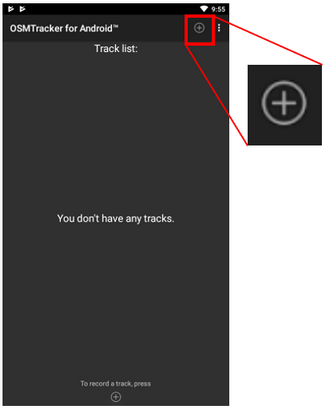

Using OSMTrackers
Objectives:
-
Explain OSMTracker as one of survey tools for recording tracks and photos
-
How to set up the OSMTracker for the first time
-
Learn how to use OSMTracker
I. What is OSMTracker?
OSMTracker is an android application that allows us to record our survey data. Similar to GPS, OSMTracker is able to record waypoint and also track. If you want to learn more about GPS for field survey, you can see the GPS Module. What makes OSMTracker different with common GPS device is its capability to take pictures when you collect the survey data. With these images taken, it will make your mapping more easier because you can track back what object you have been taken and take a look into your pictures for more detail. Waypoint and track that you have collected can be converted into .gpx file so you can open your survey data using JOSM or you can directly upload your data into OpenStreetMap.
If you want to use OSMTracker you can download the application on your smartphone. Open your Google Playstore and search OSMTracker in search box.

After the installation finished, open your OSMTracker application on your smartphone.

II. OSMTracker Setting
Before you can use the OSMTracker, there are few setting you have to do. Go to
 button on the top right corner and then select Settings.
button on the top right corner and then select Settings.

On the settings page there are several things you have to look:

-
GPS logging interval
This section will set how often your OSMTracker record the track. If you set the number smaller, OSMTracker will record the track more often. The default value for this setting is 0, which means that OSMTracker will always record your track. This will affect your battery life. You can change the number according to your need, for example 2 second.
-
External storage (SD) directory
This section determine where you want to save all your survey data on your smartphone. By default, OSMTracker will create a new folder called “osmtracker” on your smartphone’s internal storage. If you don’t want to change this setting, you can ignore this section.
-
One directory per track
If you activate this feature, each track you save will create a new folder in your internal storage.
-
Filename for named track
This section will set the labelling of you survey data. By default, the labelling consists of track name, survey date, and survey time. You can ignore this setting if you don’t want to change it.
-
Screen always on
If you activate this feature, you will let your smartphone always turn on when you use OSMTracker. When you using this setting, it will drain your smartphone’s battery fast. You can change it as you needed.
-
Background map
Use this setting to show the background map on your track. Activate this setting so you can see your survey track with map as it’s background.
-
Map tile provider
You can change your background map using this feature.
After all the setting is done, then you are ready to use your OSMTracker. Always remember to activate your GPS setting on your smartphone, then you can open your OSMTracker. If you are using OSMTracker for the first time, your home page will be empty. Later, all your survey data will show up on your home page.
III. OSMTracker Basic Operation
-
Recording Survey Track
If you want to start your track recording, you can select the button + on your top right of your screen. You will see the Track Logger page.

Remember to always check your GPS accuracy. All feature on OSMTracker will not available if you are not receiving a good GPS signal. Try to get GPS accuracy as best as you can (below 10 meter) to prevent a mistake when recording your current position. You can see your GPS signal indicator on your top right corner of your screen (look at the picture). The signal bar color will change to green and become full when you receive a good signal. Make sure you are in a good position to receive signal. Locate yourself on the open field and make sure you are not under the roof or tree.

When the GPS accuracy is good enough, then you can start to record your track. When you press the + button and the GPS accuracy is good enough, OSMTracker will automatically record your track.
-
Recording Object using Waypoints and Picture
When you open your Track Logger page, there are many buttons to access, but if you want to record waypoints and also picture, you only have to use this 2 button:

-
Text Note
Use Text note to mark your current position as a waypoint. Just press this button and then fill the information. For example, you can label your waypoint with number and then the name of your object.

-
Take Photo
Use Take Photo to take your object photos. You can straight use your smartphone camera or you can select the photo from your gallery.

-
-
Stop and Continue Track Recording
If you want to stop your recording, you can follow these steps:
-
On the Track Logger page, please go back to your home page, then find one file track you have collected before. Press on that file for a while until additional menu is shows up.

-
Choose Stop tracking.
-
You can also press
 button on the top corner on your Track Logger page to stop the recording and save your record.
button on the top corner on your Track Logger page to stop the recording and save your record.
If you want to continue your track record on your previous file, then you have to :
- Press on your previous file until additional menu is shows up.

- Then choose Resume Tracking
-
Note :
If your file has an orange color clock icon, it means that your file still on track recording mode. This icon will disappear after you stop and save your file.

-
Showing List of Objects Collected
You can see list of objects you have collected. On Track Logger page, press the
button on the top right corner of your screen, then select Waypoints.
You will see the list of objects and the photos you have collected on the Waypoint list.

-
Showing Track and Waypoint Collected
You can also see your track and waypoints you have collected. On your Track Logger page, choose menu
on the top right corner of your screen, then choose Display Track.
When you choose to display your track, OSMTracker will ask your permission to show the background map. Choose Display Background Map.

You will see the map with line, star, and people icon on the top of the map. The star icon represent the waypoints, the line represents the track you have collected, and the people icon shows where is your current position on the map.

-
Saving the OSMTracker Data
After you collecting the data, you can save your data and use it for your mapping guide. In order to do that, you need to save your survey data as a .gpx data format. After that, you can upload it to OpenStreetMap server or you can move the data to your laptop.
-
Saving Track and Waypoints as .gpx Data
You can save your track and waypoint into .gpx data. You can open .gpx data with mapping software like QGIS and JOSM. On your survey file, select and press the file for a while, then select Export as GPX. If the process is successful, you can see the green dot on the right side of the file name.

-
Uploading Track to OpenStreetMap Server
You can upload your survey data to OpenStreetMap server. On your survey file, press and hold it for a while, then select Upload to OpenStreetMap.

On OpenStreetMap Upload page, you need to fill the form like name and file description. You can ignore on Tags section. On the bottom section, you can set the track for :
-
Private
Track will not shown up to the public. Trackpoints can be accessed on the time sequence using GPS API without time stamp.
-
Public
Track will be shown to the public and available for download to the other user.
-
Trackable
Track will be shown to the public, but trackpoints still can be accessed by public GPS API. Other user can download your data but it will not connected with you.
-
Identifiable
Track will be shown to the public. Other user can download your data and can refer your OSM username.
For this option, you can choose Trackable or Public so another user can download your data.

-
-
Copying Track and Waypoint to Laptop/Computer
All the .gpx data stored in your internal storage of your smartphone. You can search the file using your file manager. To copy the data, you can follow the instruction:
-
Connect your smartphone to your laptop using your smartphone cable and then find folder called “osmtracker” in your smartphone.

-
Inside of your OSMTracker folder, you can find a folder containing a .gpx data and photos. Copy the entire folder into your laptop.

-
Open your JOSM, and then open your gpx data. Select menu File → Open and then open the .gpx data format.

-
When you open your .gpx file, JOSM will automatically shows track and waypoint along with the photo as well.

You can use your survey result as a guidance for your mapping using JOSM. The photos taken will help you identify what object you should create in JOSM.
-
SUMMARY
In this chapter you have learned how to do a field survey using OSMTracker. OSMTracker allows you to record your track, waypoint, and take a picture of your survey object. You also have learned how to do an initial setting and how to operating your OSMTracker. You can use OSMTracker as your alternative tools for your survey in case if you don’t have GPS.